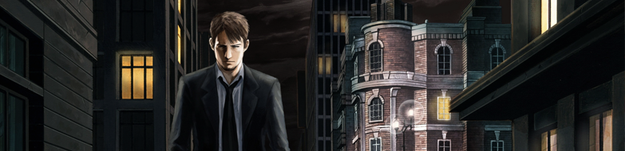
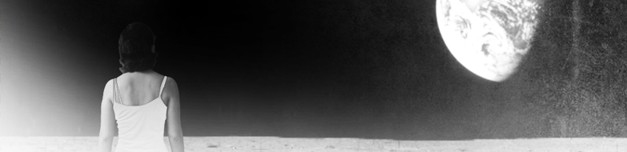
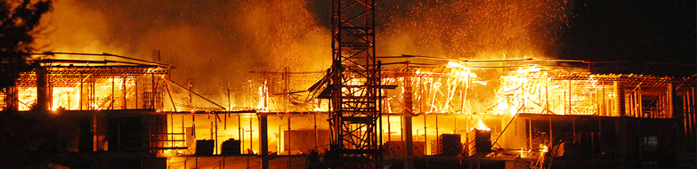
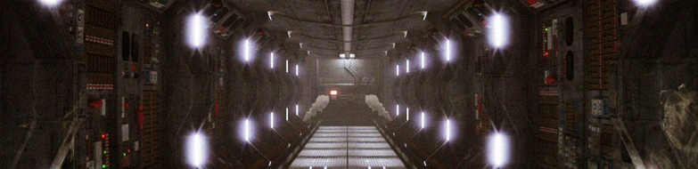

JIŘÍ ŠTRAUB
O MNĚ
POVÍDKY
PÍSŇOVÉ TEXTY
KNIHY
OSTATNÍ
KONTAKT

Návrat

Dobrou noc, krásná Danielo

Norman 2: Noc obratu
Norman 1: Začátek dlouhého konce
Vesmírem
Hovor s Rethorem

Řetězec
© 2013 JIŘÍ ŠTRAUB All Rights Reserved | design by
Martin Jenč